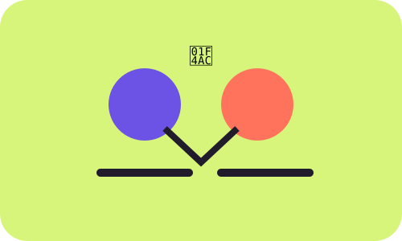

MODULE 04 · 07
💬 Redes

SUBSECCIÓN
Conecta sin quedarte atrapado
Las redes pueden facilitar la conexión, pero también pueden competir con otras actividades. El bienestar digital implica decidir cuándo conectarte, para qué y cuándo salir.
Fuente / respaldo
UNESCO (2023), Global Education Monitoring Report: Technology in education.
UNESCO (2023), Global Education Monitoring Report: Technology in education.
Comprobación rápida
¿Qué decisión favorece una relación más intencional con las redes?